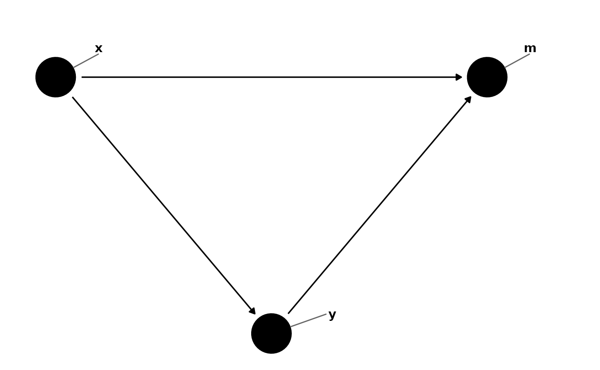
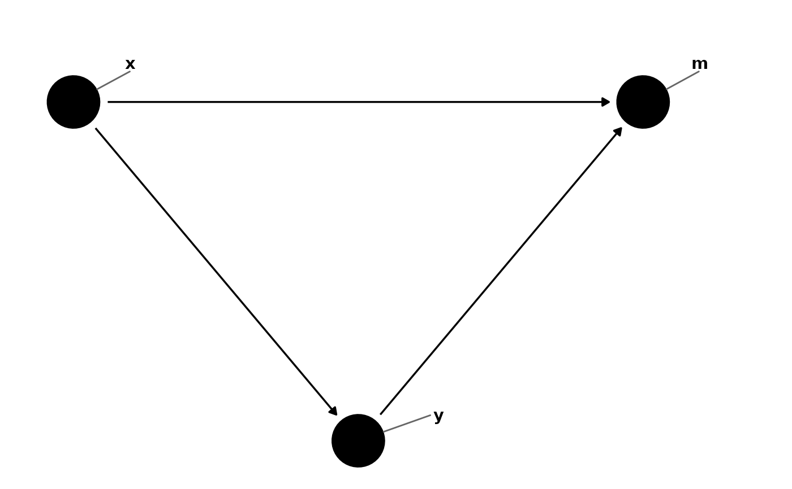

These functions are minor modifications of those in the ggrepel package.
geom_dag_text_repel() adds text directly to the plot.
geom_dag_label_repel() draws a rectangle underneath the text, making it
easier to read. The text labels repel away from each other and away from the
data points. geom_dag_label_repel2() is a slightly stylized version of
geom_dag_label_repel()` that often looks better on DAGs.
Usage
geom_dag_text_repel(
mapping = NULL,
data = NULL,
parse = FALSE,
...,
box.padding = 1.25,
point.padding = 1.5,
segment.color = "#666666",
fontface = "bold",
segment.size = 0.5,
arrow = NULL,
force = 1,
max.iter = 2000,
nudge_x = 0,
nudge_y = 0,
na.rm = FALSE,
show.legend = NA,
inherit.aes = TRUE
)
geom_dag_label_repel(
mapping = NULL,
data = NULL,
parse = FALSE,
...,
box.padding = grid::unit(1.25, "lines"),
label.padding = grid::unit(0.25, "lines"),
point.padding = grid::unit(1.5, "lines"),
label.r = grid::unit(0.15, "lines"),
label.size = 0.25,
segment.color = "grey50",
segment.size = 0.5,
arrow = NULL,
force = 1,
max.iter = 2000,
nudge_x = 0,
nudge_y = 0,
na.rm = FALSE,
show.legend = NA,
inherit.aes = TRUE
)
geom_dag_label_repel2(
mapping = NULL,
data = NULL,
box.padding = 2,
max.overlaps = Inf,
label.size = NA,
...
)Arguments
- mapping
Set of aesthetic mappings created by
aesoraes_. If specified andinherit.aes = TRUE(the default), is combined with the default mapping at the top level of the plot. You only need to supplymappingif there isn't a mapping defined for the plot.- data
A data frame. If specified, overrides the default data frame defined at the top level of the plot.
- parse
If TRUE, the labels will be parsed into expressions and displayed as described in ?plotmath
- ...
other arguments passed on to
layer. There are three types of arguments you can use here:Aesthetics: to set an aesthetic to a fixed value, like
colour = "red"orsize = 3.Other arguments to the layer, for example you override the default
statassociated with the layer.Other arguments passed on to the stat.
- box.padding
Amount of padding around bounding box, as unit or number. Defaults to 0.25. (Default unit is lines, but other units can be specified by passing
unit(x, "units")).- point.padding
Amount of padding around labeled point, as unit or number. Defaults to 0. (Default unit is lines, but other units can be specified by passing
unit(x, "units")).- segment.color, segment.size
- fontface
A character vector. Default is "bold"
- arrow
specification for arrow heads, as created by
arrow- force
Force of repulsion between overlapping text labels. Defaults to 1.
- max.iter
Maximum number of iterations to try to resolve overlaps. Defaults to 10000.
- nudge_x, nudge_y
Horizontal and vertical adjustments to nudge the starting position of each text label. The units for
nudge_xandnudge_yare the same as for the data units on the x-axis and y-axis.- na.rm
If
FALSE(the default), removes missing values with a warning. IfTRUEsilently removes missing values.- show.legend
logical. Should this layer be included in the legends?
NA, the default, includes if any aesthetics are mapped.FALSEnever includes, andTRUEalways includes.- inherit.aes
If
FALSE, overrides the default aesthetics, rather than combining with them. This is most useful for helper functions that define both data and aesthetics and shouldn't inherit behaviour from the default plot specification, e.g.borders.- label.padding
Amount of padding around label, as unit or number. Defaults to 0.25. (Default unit is lines, but other units can be specified by passing
unit(x, "units")).- label.r
Radius of rounded corners, as unit or number. Defaults to 0.15. (Default unit is lines, but other units can be specified by passing
unit(x, "units")).- label.size
Size of label border, in mm.
- max.overlaps
Exclude text labels when they overlap too many other things. For each text label, we count how many other text labels or other data points it overlaps, and exclude the text label if it has too many overlaps. Defaults to 10.
Examples
library(ggplot2)
g <- dagify(
m ~ x + y,
y ~ x,
exposure = "x",
outcome = "y",
latent = "m",
labels = c("x" = "Exposure", "y" = "Outcome", "m" = "Collider")
)
g |>
tidy_dagitty() |>
ggplot(aes(x = x, y = y, xend = xend, yend = yend)) +
geom_dag_edges() +
geom_dag_point() +
geom_dag_text_repel(aes(label = name), show.legend = FALSE) +
theme_dag()
 g |>
tidy_dagitty() |>
dag_label(labels = c(
"x" = "This is the exposure",
"y" = "Here's the outcome",
"m" = "Here is where they collide"
)) |>
ggplot(aes(x = x, y = y, xend = xend, yend = yend)) +
geom_dag_edges() +
geom_dag_point() +
geom_dag_text() +
geom_dag_label_repel(
aes(label = label, fill = label),
col = "white",
show.legend = FALSE
) +
theme_dag()

g |>
tidy_dagitty() |>
dag_label(labels = c(
"x" = "This is the exposure",
"y" = "Here's the outcome",
"m" = "Here is where they collide"
)) |>
ggplot(aes(x = x, y = y, xend = xend, yend = yend)) +
geom_dag_edges() +
geom_dag_point() +
geom_dag_text() +
geom_dag_label_repel(
aes(label = label, fill = label),
col = "white",
show.legend = FALSE
) +
theme_dag()
